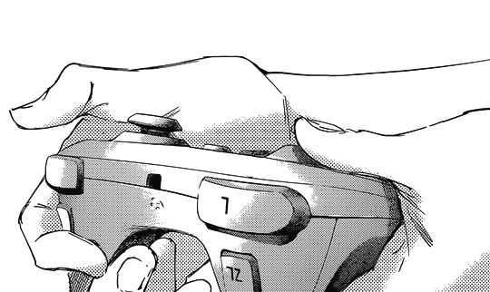
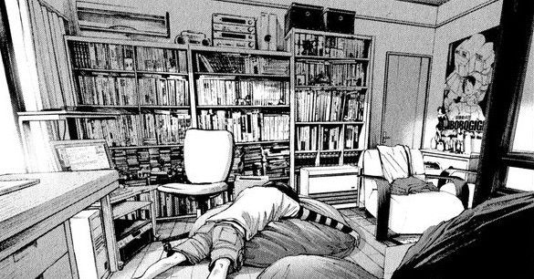

A hobby is considered to be a regular activity that is done for enjoyment, typically during one's leisure time. Hobbies include collecting themed items and objects, engaging in creative and artistic pursuits, playing sports, or pursuing other amusements. Participation in hobbies encourages acquiring substantial skills and knowledge in that area. The advancing production and technology of the nineteenth century provided workers with more leisure time to engage in hobbies. Because of this, the efforts of people investing in hobbies has increased with time.
Manga
Manga (漫画) are comics or graphic novels originating from Japan. Most manga conform to a style developed in Japan in the late 19th century, and the form has a long history in earlier Japanese art. The term manga is used in Japan to refer to both comics and cartooning. Outside of Japan, the word is typically used to refer to comics originally published in the country. In Japan, people of all ages and walks of life read manga. The medium includes works in a broad range of genres: action, adventure, business and commerce, comedy, detective, drama, historical, horror, mystery, romance, science fiction and fantasy, erotica (hentai and ecchi), sports and games, and suspense, among others. Many manga are translated into other languages.
Since the 1950s, manga has become an increasingly major part of the Japanese publishing industry.[8] By 1995, the manga market in Japan was valued at ¥586.4 billion ($6-7 billion), with annual sales of 1.9 billion manga books and manga magazines (also known as manga anthologies) in Japan (equivalent to 15 issues per person).[10] In 2020 Japan's manga market value hit a new record of ¥612.6 billion due to the fast growth of digital manga sales as well as increase of print sales. In 2022 Japan's manga market hit yet another record value of ¥675.9 billion. Manga have also gained a significant worldwide readership. Beginning with the late 2010s manga started massively outselling American comics.
Game

A game is a structured form of play, usually undertaken for entertainment or fun, and sometimes used as an educational tool. Many games are also considered to be work (such as professional players of spectator sports or games) or art (such as jigsaw puzzles or games involving an artistic layout such as Mahjong, solitaire, or some video games).
Games are sometimes played purely for enjoyment, sometimes for achievement or reward as well. They can be played alone, in teams, or online; by amateurs or by professionals. The players may have an audience of non-players, such as when people are entertained by watching a chess championship. On the other hand, players in a game may constitute their own audience as they take their turn to play. Often, part of the entertainment for children playing a game is deciding who is part of their audience and who is a player. A toy and a game are not the same. Toys generally allow for unrestricted play whereas games present rules for the player to follow. Key components of games are goals, rules, challenge, and interaction. Games generally involve mental or physical stimulation, and often both. Many games help develop practical skills, serve as a form of exercise, or otherwise perform an educational, simulational, or psychological role
Sleep

Sleep is a state of reduced mental and physical activity in which consciousness is altered and certain sensory activity is inhibited. During sleep, there is a marked decrease in muscle activity and interactions with the surrounding environment. While sleep differs from wakefulness in terms of the ability to react to stimuli, it still involves active brain patterns, making it more reactive than a coma or disorders of consciousness. Sleep occurs in repeating periods, during which the body alternates between two distinct modes: REM and non-REM sleep. Although REM stands for "rapid eye movement", this mode of sleep has many other aspects, including virtual paralysis of the body.[2] Dreams are a succession of images, ideas, emotions, and sensations that usually occur involuntarily in the mind during certain stages of sleep.
During sleep, most of the body's systems are in an anabolic state, helping to restore the immune, nervous, skeletal, and muscular systems; these are vital processes that maintain mood, memory, and cognitive function, and play a large role in the function of the endocrine and immune systems. The internal circadian clock promotes sleep daily at night. The diverse purposes and mechanisms of sleep are the subject of substantial ongoing research. Sleep is a highly conserved behavior across animal evolution, likely going back hundreds of millions of years. Humans may suffer from various sleep disorders, including dyssomnias such as insomnia, hypersomnia, narcolepsy, and sleep apnea; parasomnias such as sleepwalking and rapid eye movement sleep behavior disorder; bruxism; and circadian rhythm sleep disorders. The use of artificial light has substantially altered humanity's sleep patterns. Common sources of artificial light include outdoor lighting and the screens of electronic devices such as smartphones and televisions, which emit large amounts of blue light, a form of light typically associated with daytime. This disrupts the release of the hormone melatonin needed to regulate the sleep cycle